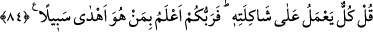

HERKES MİZAÇ VE
MEŞREBİNE GÖRE
İŞ YAPAR
83. İnsana nimet verdiğimiz zaman (bizden) yüz çevirip yan çizer; ona bir de
zarar ziyan dokunacak olsa iyice karamsarlığa düşer.
84. De ki: Herkes, kendi mizaç ve meşrebine göre iş yapar. Bu durumda kimin
doğru bir yol tuttuğunu Rabbiniz en iyi bilendir.
“İnsana” sıhhat ve genişlik şeklinde “nimet verdiğimiz zaman” bizden, bize
şükretmekten “yüz çevirip yan çizer;” kendi nefsi ile kalıp uzaklaşır, salına salına
yürür, yâni tekebbür ve büyüklük gösterir, hak yoldan uzaklaşır. Bu ifâde insanın
kibirlenme ve kendini büyük görmesinden kinâyedir. Çünkü uzaklaşmak ve yüz
çevirmek kibirli insanların davranışlarındandır.
“Ona bir de zarar ziyan dokunacak olsa” fakirlik, hastalık veya bir musibet başına
gelse “iyice karamsarlığa düşer.” Nimet vermek Allah’a isnâd edildikten sonra
dokunmanın ziyâna/şerre isnâd edilmesi, hayrın bizzat istenen bir şey olduğuna, şerrin
ise böyle olmadığına işâret etmektedir.
“
” Allah’ın rahmet ve ihsânına karşı şiddetli bir umutsuzluk, karamsarlık
demektir. İnsan hakkında böyle buyrulması, bir özelliğe sâhip bâzı ferdlerini dikkate
alarak bir cinsin hepsi vasfetmek türündendir. “Fakat ona bir şer dokunduğu zaman
da yalvarıp durur.” (Fussılet, 41/51) âyeti ve benzerleri bu âyete ters düşmez. Çünkü
bu âyette bahsedilen insanların bir bölümünün vasfıdır.
84. De ki: Herkes, kendi mizaç ve meşrebine göre iş yapar. Bu durumda kimin
doğru bir yol tuttuğunu Rabbiniz en iyi bilendir.
“De ki:” Mü’minlerden ve kâfirlerden “Herkes,” hidâyet ve sapıklıktan kendine
yaraşan şekilde “kendi mizaç ve meşrebine göre iş yapar.” Yâni herkes kendine lâyık